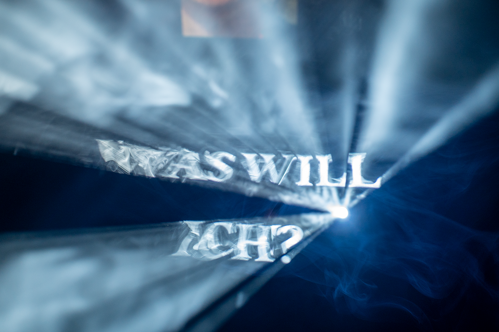
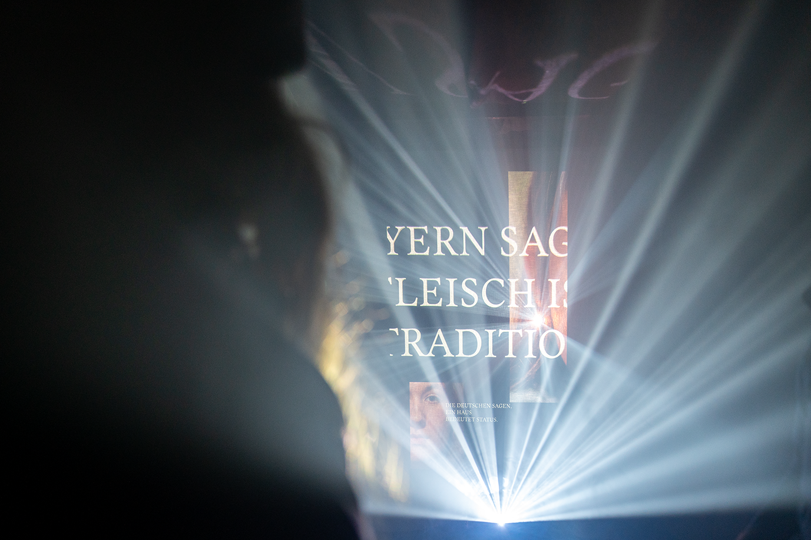
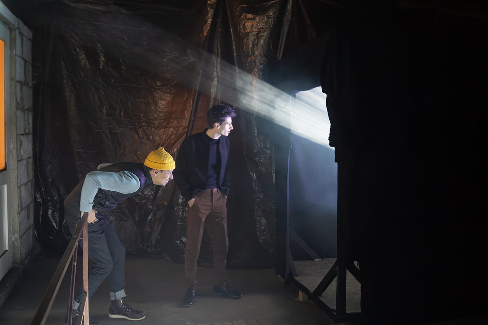

Bachelor project · Fog projection · 2024
What remains when the fog lifts?
The work is an installation that brings text, photography, and movement onto an unstable medium: fog. The projection appears, shifts, dissolves — never quite graspable, never fixed.

Which habits and conventions is Generation Z questioning? Monogamy, home ownership, meat consumption — beliefs long taken for granted are being renegotiated.


The subject matches the medium. The work gives these questions no solid frame, only a fleeting one. Animated typography and documentary photography overlap in the projection.
Visitors were invited to walk through the fog — and literally step into an open question.